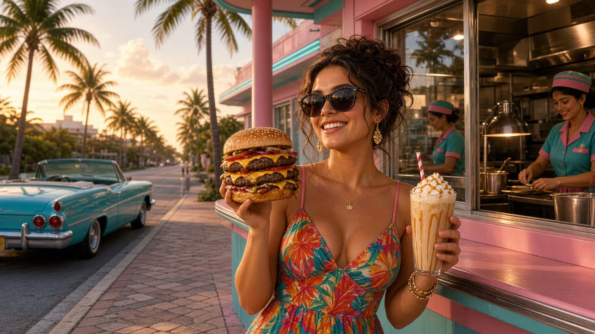

GTA 6 businesses
Is Burger Shot Real? GTA 6 Pop-Ups in Florida | Peekhole

Short answer: For a few weeks, yes. Burger Shot is GTA's made-up fast-food chain, but from November 13 to December 31, 2026, Skinny Louie restaurants in Florida are running as Burger Shot pop-ups as part of an official GTA VI collaboration.
Who is behind it?
Skinny Louie is a smash-burger chain that started in Miami's Wynwood neighborhood in 2023. QSR Magazine calls it Rockstar's exclusive Florida restaurant partner for the promo. Stores get Burger Shot signs, uniforms, and packaging, and Secret Miami reports both walk-in and delivery options.
What's on the menu?
- The Bleeder (triple): three Black Angus smash patties, American cheese, bacon, pickles, BBQ sauce, and ketchup.
- Burger Shot single and double: smash patties with cheese, lettuce, onions, and Burger Shot sauce.
- Caramel milkshake.
Where can I try it?
Participating Skinny Louie locations across Florida, including its stands inside Miami's Kaseya Center, where the Burger Shot stands opened during Miami Heat games in October. Secret Miami says the arena also has a Cluckin' Bell fried-chicken stand. Check Skinny Louie's own site before you drive, since locations can change.
In the game, Burger Shot is a long-running GTA joke brand. Now Vice City's greasiest export is just a real drive away.
Sources
- QSR Magazine — Skinny Louie partners with Rockstar Games
- IGN — Burger Shot expands across Florida
- Secret Miami — Real-life GTA 6 Burger Shot in Florida
Peekhole take: A triple called The Bleeder? Vice City never did subtle. Neither do we.